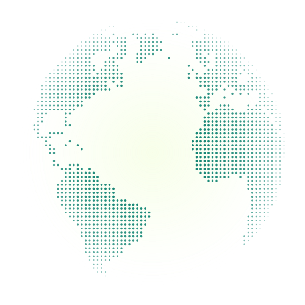
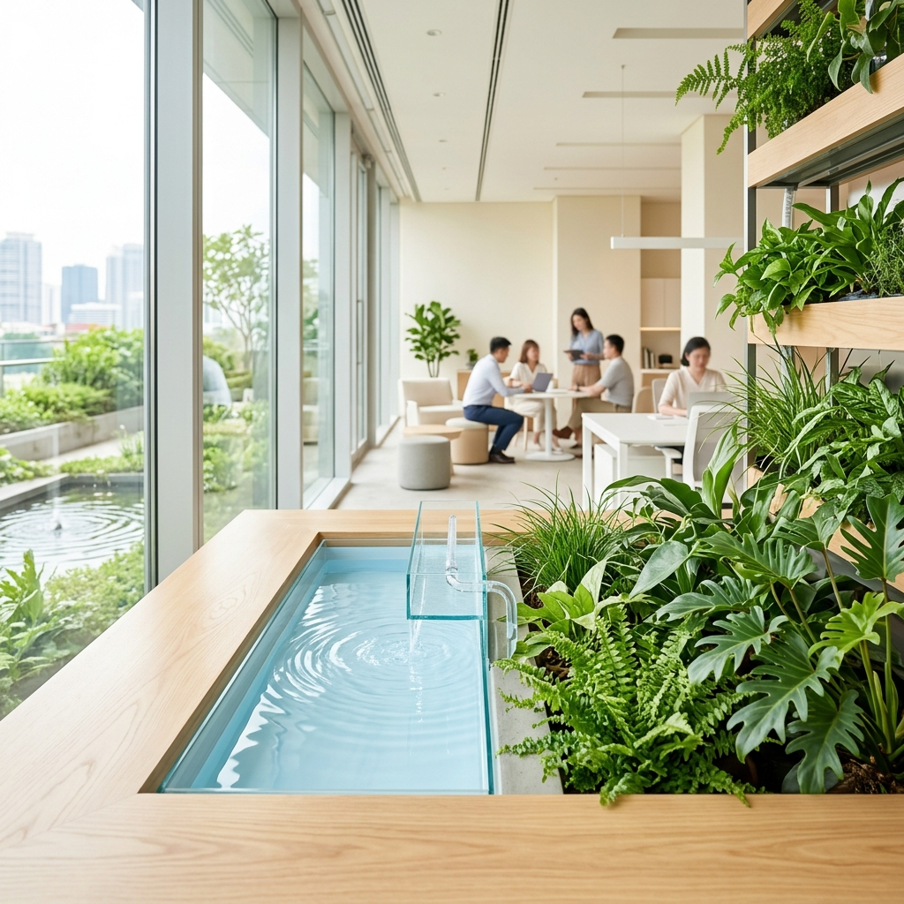

Engineering the Future of
Food, Water & Agriculture
We pioneer intelligent systems — from organic aeroponics and smart aquaculture to AI-powered crop intelligence and sustainable water infrastructure — building the foundation for a food-secure, resource-efficient world.
Building the Future of Food, Water & Sustainability
Aero Intelli develops intelligent systems that improve how food is produced, water is managed, and sustainable infrastructure is built.
By combining engineering, technology, sustainability, and innovation, we create solutions designed to improve efficiency, optimize resources, and support long-term environmental resilience.
Our work spans advanced aquaculture systems, hydroponics, aeroponics, water technologies, automation, and future-focused infrastructure.
Food Systems
Advanced technologies supporting modern food production.
Water Technologies
Solutions focused on efficient water management and sustainability.
Innovation
Continuous research, development, and engineering excellence.
Future Infrastructure
Scalable systems designed for long-term impact.
The world's growing demand for food, water, and sustainable infrastructure requires a new generation of intelligent solutions.
Aero Intelli exists to accelerate that transition through innovation, engineering, and responsible technology development.
We believe the future depends on systems that are efficient, scalable, environmentally responsible, and built for long-term impact.
Food
Building technologies that support the future of food production.
Water
Creating systems that improve resource efficiency and long-term sustainability.
Infrastructure
Engineering scalable solutions for tomorrow's challenges.
The future will belong to organizations capable of producing more with fewer resources while creating greater value for society and the environment.

OUR VISION
A world where farming and technology grow together.

OUR MISSION
Growing more food with less water — engineered, not compromised.
— responsibly.
Aero Intelli builds recirculating aquaculture systems, precision agriculture, and AI-driven monitoring to produce export-grade food sustainably. We believe technology and nature aren't opposites — they're partners. On a global scale, we're proving that responsible farming can also be profitable farming.
90%
less water consumption vs traditional methods
24/7
AI-monitored biosecurity & water quality
OUR VALUES
Principles that don't bend under scale.
Precision
Every system is measured, monitored, and optimized — nothing is left to guesswork.
Sustainability
Less water, less waste, more yield. Efficiency isn't a trade-off, it's the design goal.
Transparency
Farmers see real-time data on their own systems. No black boxes, no blind trust required.
Partnership
We build with farmers, not just for them. Every system is shaped by the people running it.
Founder's Note
Bunga Krishanth
Founder & CEO, Aero Intelli
FROM THE FOUNDER
We didn't set out to build another agritech company. We set out to prove that Indian farmers can cultivate at the same advanced standards as any foreign nation — working hand-in-hand with world-class AI technology.
Bunga Krishanth founded Aero Intelli to close the technology gap, empowering Indian farmers with the same intelligent tools used by the world's most advanced food producers. What started as hands-on work — writing control code, wiring sensors, and testing water chemistry by hand — became a company built to place automated AI systems in the hands of growers. Every system we deliver is designed to ensure our farmers work side-by-side with state-of-the-art technology.